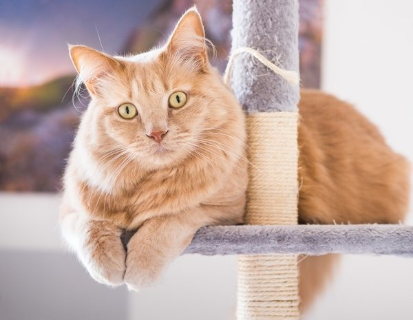

What do we look for in our volunteers?
Just a little bit of consistency and commitment. Everyone spends the time they want and can. It is
the
volunteer who decides what availability you have and how to help. If we're realistic, we won't cover
everything in the world, so the more we can work together.But you decide what your availability is,
how
you want to help and when.